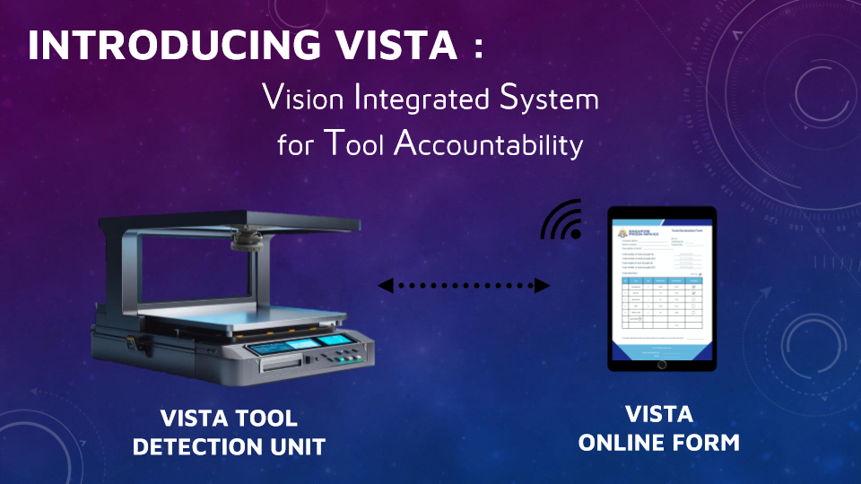
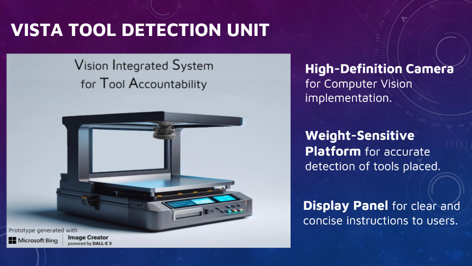
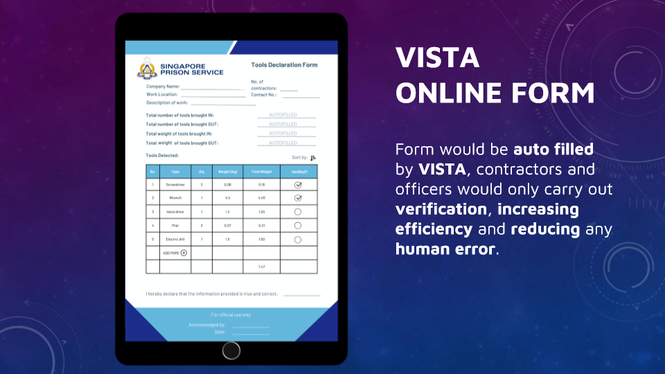
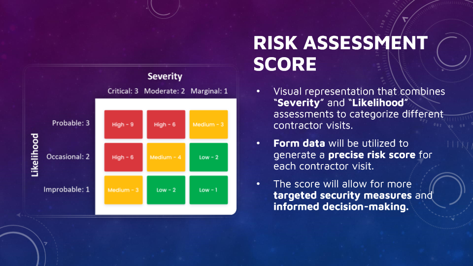

HacX! Hack for Public Safety
Finalist Team, Issued by Home Team Science and Technology Agency (HTX) and Microsoft

Project Overview
In a rigorous competition that challenged participants to devise technology-driven solutions for public safety, our team conceptualized a prototype that is aimed at streamlining and enhancing operational workflows within Prison Services. Our solution, VISTA (Vision Integrated System for Tool Accountability), leverages advanced technology including Microsoft Azure, Copilot, YOLOv8 computer vision model, and reinforcement learning to enhance efficiency, accuracy, and security in tool management.
Our Solution: VISTA
VISTA offers a comprehensive solution with several key features to address the identified pain points.
- Object Recognition: Utilizes YOLOv8 for real-time detection and confidence ratings.
- Weight Detection: Incorporates a weight-sensitive platform for precise tool weight measurement.
- Online Form: Auto-fills tool details to reduce manual entry and errors.
VISTA Tool Detection Unit
Features a high-definition camera, weight-sensitive platform, and user display panel for clear instructions. The system integrates with Microsoft Azure and uses reinforcement learning for continuous improvement. Weight detection for large and small tools is handled by a weight-sensitive platform. Discrepancies are flagged and reviewed, with the model learning and adjusting thresholds over time.
VISTA Form
The VISTA online form auto-fills tool details based on recognition and weight detection, streamlining the verification process. Manual entry is available for unrecognized tools to improve the model.
Risk Assessment & Considerations
VISTA includes a risk assessment feature to evaluate contractor visits based on tool count, location, and tool recognition. This helps in implementing targeted security measures and informed decision-making.